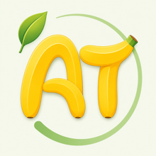
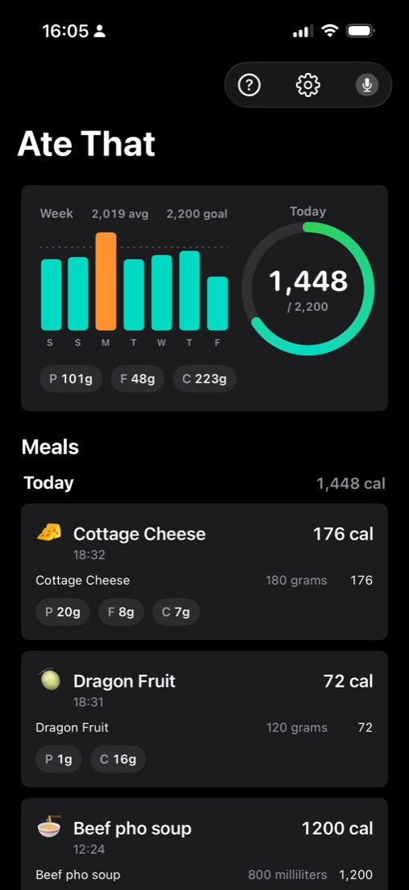
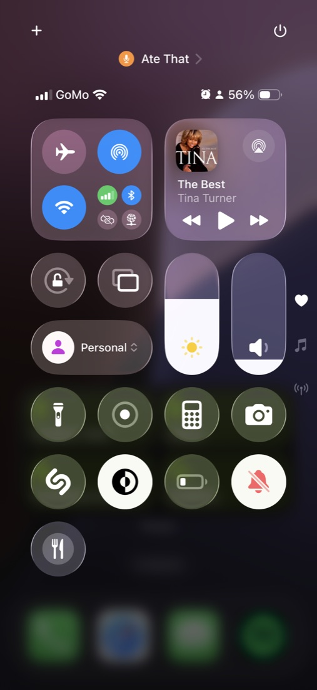
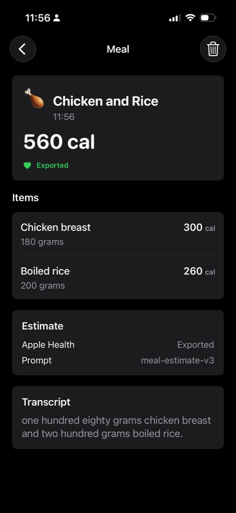
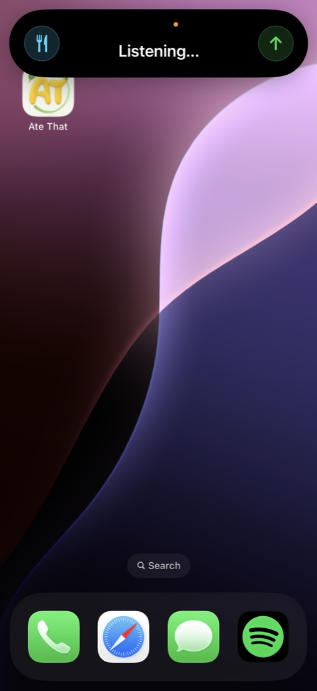

Use the Action Button
Hold the iPhone Action Button to start recording, say what you ate, then hold again to submit. Ate That shows progress in Live Activities and Dynamic Island.

Push to eat
Log meals by voice from the Action Button, get approximate calories and macros, and keep a mindful food diary without turning every meal into homework.
No accountLocal meal history
No Thalassa serverDirect OpenAI processing
Approximate by designUseful, not fake-precise
Optional Health exportDietary energy only
How it works
Ate That is built for the flow you actually want: log food the moment you think about it, even when your phone is locked. Control Center is available as a backup, and the app itself can log meals too.
Hold the iPhone Action Button to start recording, say what you ate, then hold again to submit. Ate That shows progress in Live Activities and Dynamic Island.
The app estimates calories, protein, fat, carbs, and alcohol. It treats calorie tracking as an approximation, because portions, labels, and recipes are approximate too.
Open meal details to inspect the transcript and item breakdown. Edit meals by voice, adjust the meal time, or delete entries that do not belong.
Built for iPhone
Logging starts from places iPhone users already reach for: Action Button, Control Center, Dynamic Island, Lock Screen, and the app home screen.



Trust the record
Each meal shows the item breakdown, total calories, nutrients, transcript, Apple Health export status, and prompt version metadata. The point is not perfect math; it is a clear, reviewable record.
Privacy
Ate That does not use its own server or account system. Your meal history stays on your device. When you log a meal, the app sends the necessary audio, transcript, or meal text directly to OpenAI only to transcribe and estimate the meal.
Apple Health export is optional. If enabled, Ate That writes estimated dietary energy to Apple Health and does not read your Health data.
Read Privacy Policy
Support
Send feedback to Thalassa Softwaraki LTD. Include your iPhone model, iOS version, and what you were trying to log if the issue is about recognition or estimates.
ops@thalassa.dev